Trailz
Technical artist on Trailz, a live-service PvP turf capture game.
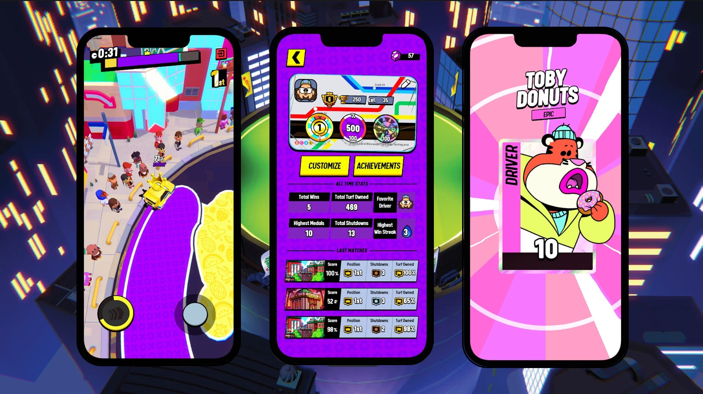
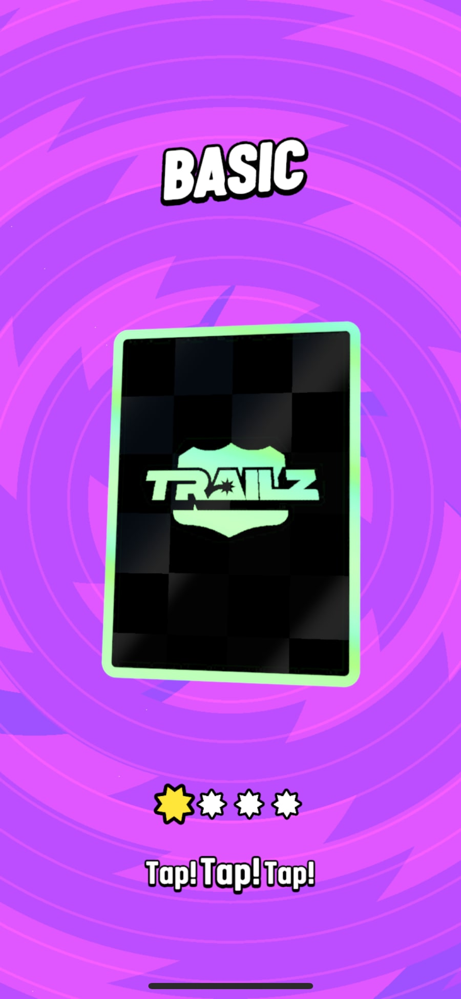
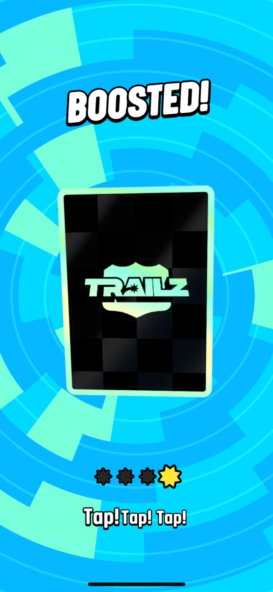
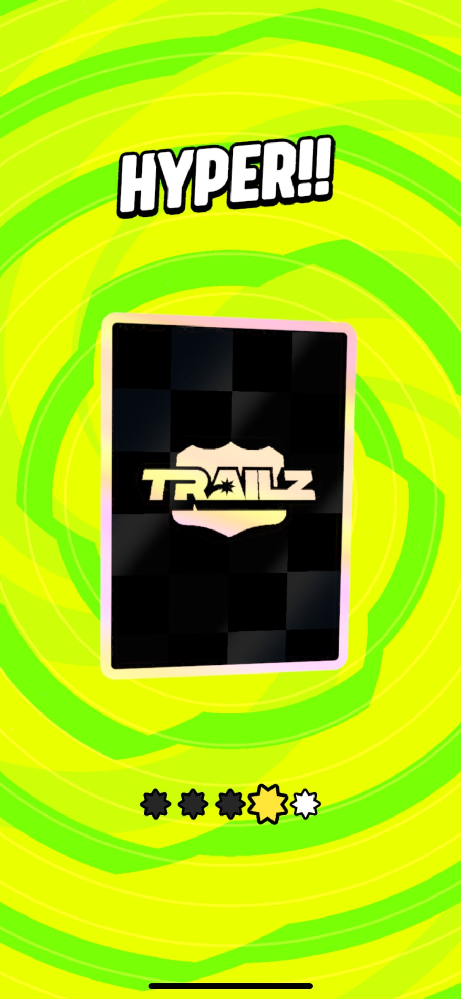
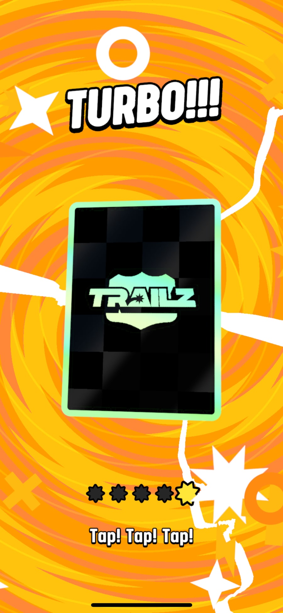
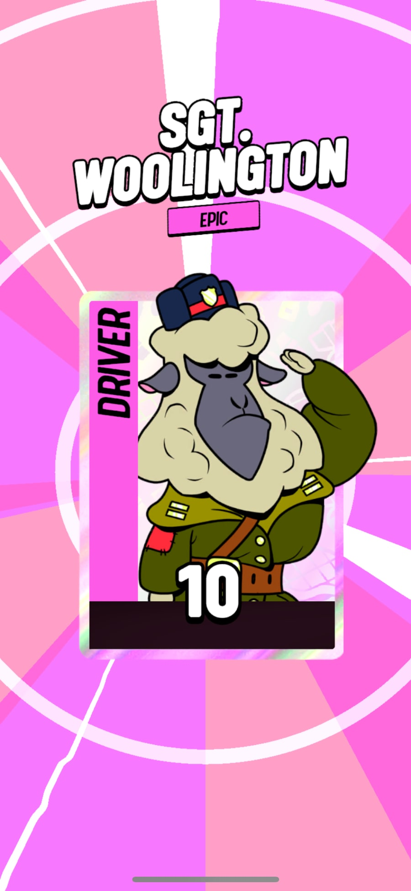
Shader breakdown
1. Centred screen-space UVs
2. Into polar UVs with a small twirl
3. Indexed length steps: floor polarUV.x
4. Add the y component of the UVs
5. Sample noise with polar UVs
6. Add the circles animation
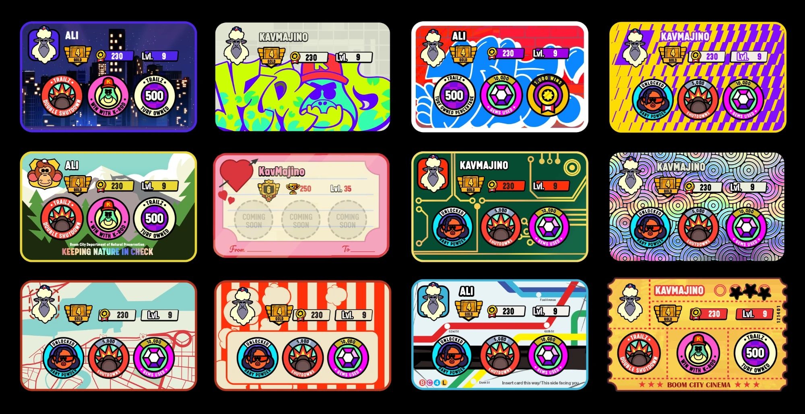
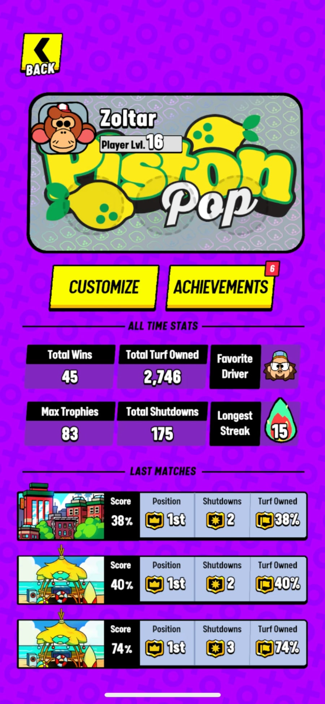
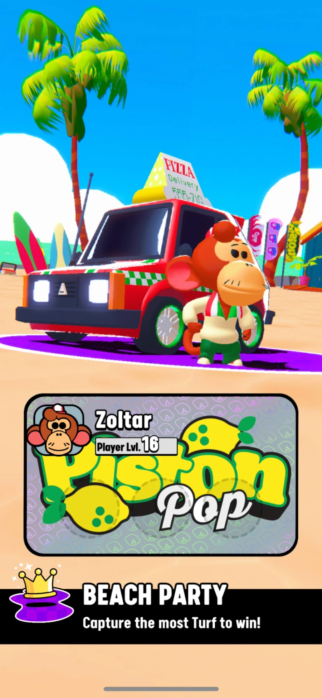
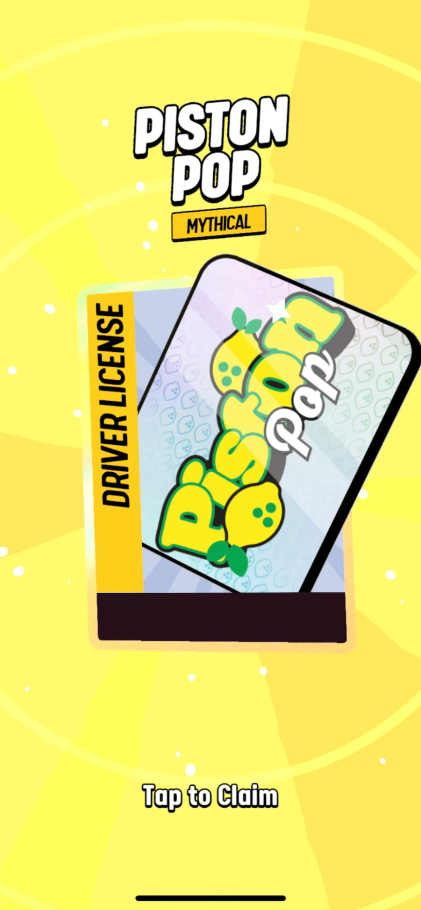
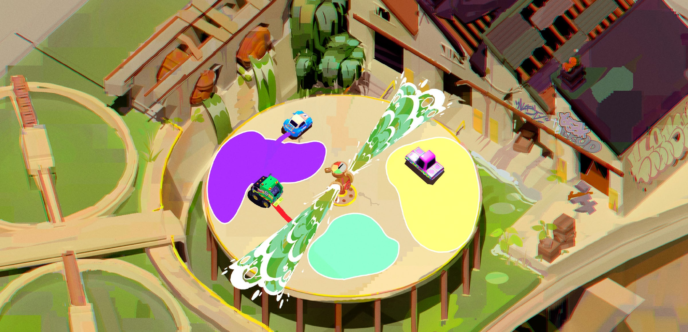
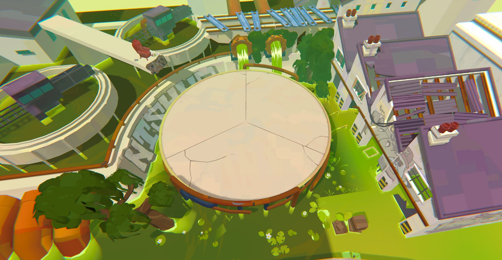
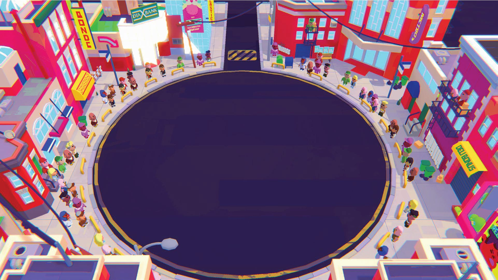
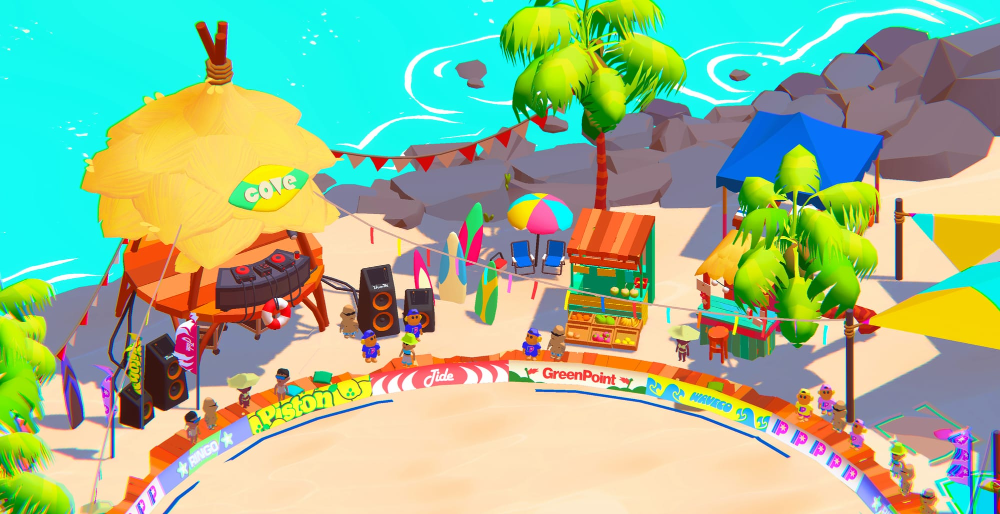
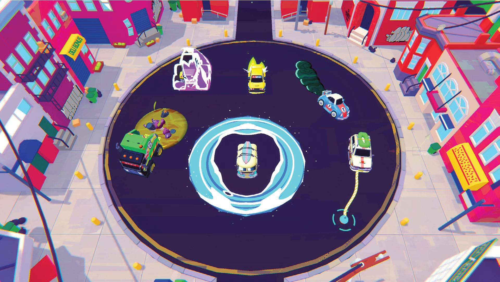